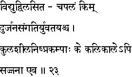
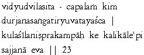

|

|
Verse 23 - Meaning:
Q: What (kim)enjoyment (chapalam)is shortlived like the flashes of lightning ?(vidyuth)
A: The association with evil men (dur-jana sangati)and with young women.(yuvati)
Q: Which type of people can stand unshaken (nisprakampaah)from high ideal of character (kula sila)even in this Kali Yuga ?(kali kaale api)
A: Those who are inherently good natured. (saj-jana)
|